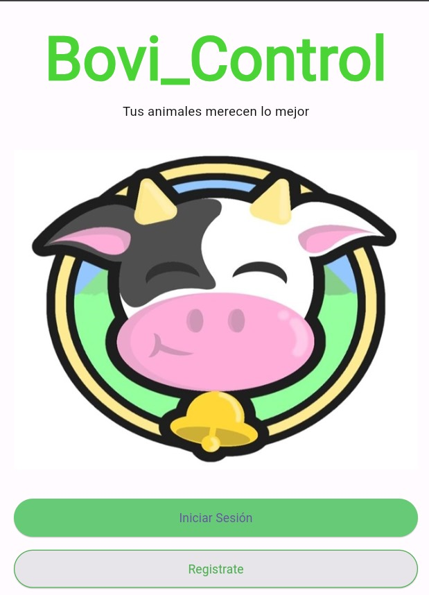

Proyectos Realizados
Proyecto A
El proyecto Bovi control es básicamente un aplicativo móvil o herramienta de organización de datos en la cual se llevará un informe de varios datos importantes que engloban la crianza de ganado dando soluciones efectivas a varios problemas que se presentan muy a menudo en los hatos ganaderos. La principal característica del proyecto es la iniciativa de contribuir al fortalecimiento de la economía ganadera en la provincia del valle de Ubaté y sus alrededores, por medio de la tecnología y los conocimientos adquiridos; en cuanto a el proyecto se ha venido realizando avances en su diseño en general, además de fijar los objetivos o metas a cumplir con el desarrollo del proyecto, teniendo como referencia que las encuestas realizadas demuestran la buena aceptación que tendrá la herramienta digital por la población ganadera en general.
Proyecto B
En el proyecto de implementación de un sistema de gestión de información (SIG) para optimizar la gestión de pacientes, registros médicos y citas en una clínica. El proyecto involucró el análisis de procesos, diseño del sistema, desarrollo del software, capacitación al personal y soporte técnico. El SIG ha logrado reducir el tiempo de espera para los pacientes, mejorar la eficiencia del personal, garantizar la calidad de los registros médicos y disminuir los costos operativos, evidenciando mis habilidades en análisis, diseño, desarrollo, capacitación y soporte técnico.